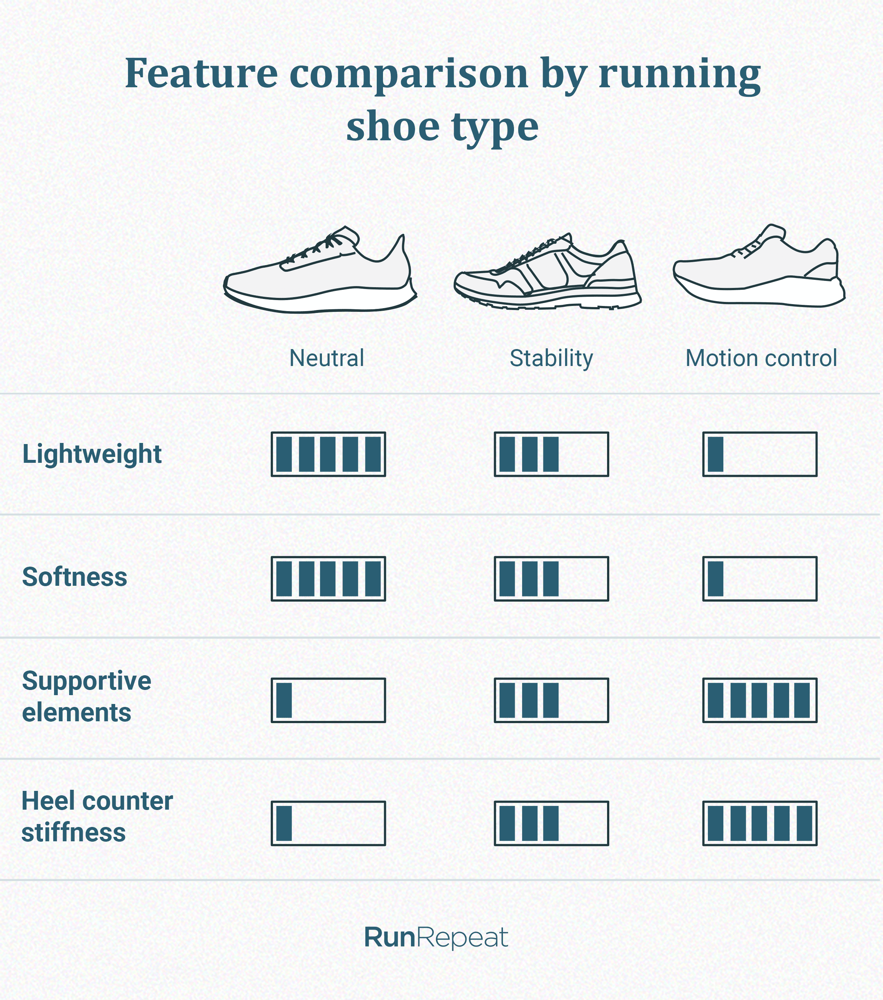
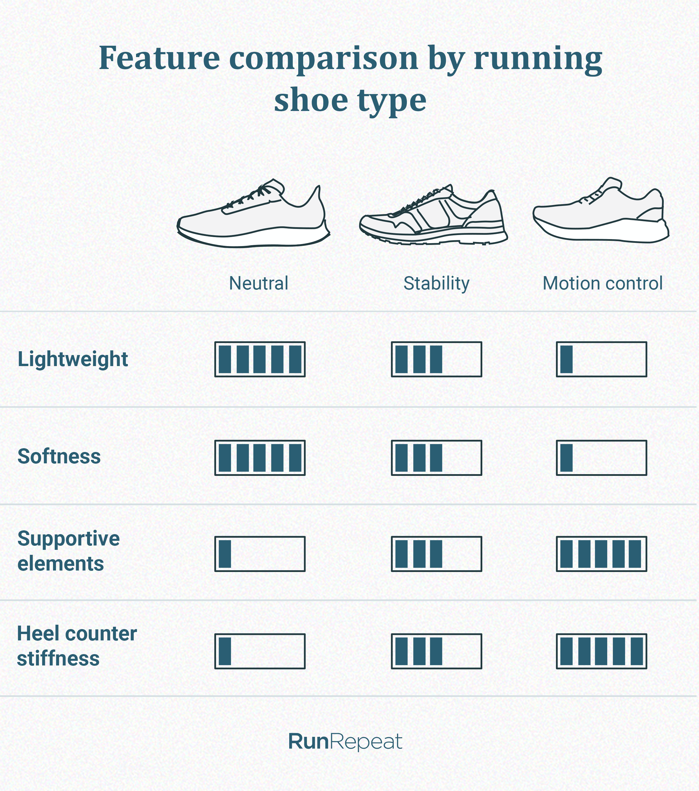

About This App

This app is designed to help users classify and filter running shoes based on their needs. You can explore shoes by support type (neutral or stability), cushioning level, brand, color, and price range. It provides a simple way to compare options and find the best fit.

This app is designed to help users classify and filter running shoes based on their needs. You can explore shoes by support type (neutral or stability), cushioning level, brand, color, and price range. It provides a simple way to compare options and find the best fit.
Key Features
- Filter by support or neutral shoes
- Compare cushioning levels
- Sort by brand, color, or price